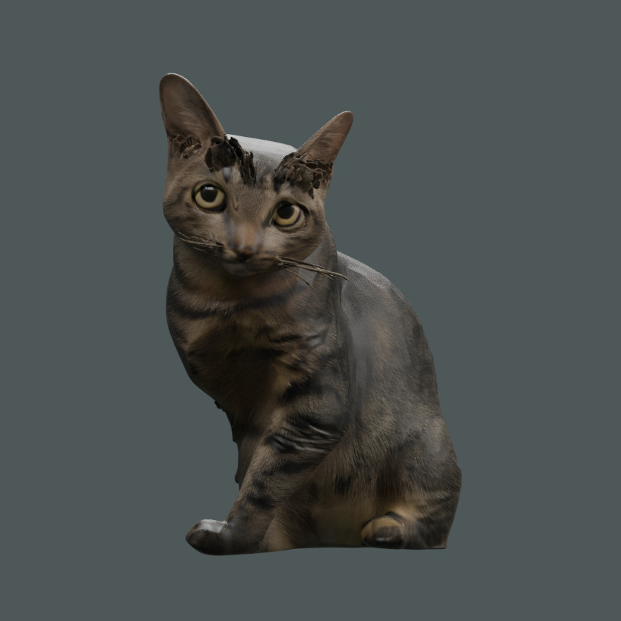

GONGFU / 3D STUDY
功夫
全身测试2K 贴图未完成

静态预览TRIPO / 原始模型
单指旋转 / 翻转 · 双指缩放
先看预览，点按开启三维
完整模型 16.9 MiB
Tripo 2K 全身测试
原始导出，尚未修整。猫自身右前腿缺失；额头、胡须和背部材质仍有生成瑕疵，相似度待改进。
先显示由原始模型渲染的预览；开启三维后可旋转、翻转与缩放。原始 GLB 保持完整。
GONGFU / 3D STUDY

静态预览单指旋转 / 翻转 · 双指缩放
先看预览，点按开启三维
完整模型 16.9 MiB
原始导出，尚未修整。猫自身右前腿缺失；额头、胡须和背部材质仍有生成瑕疵，相似度待改进。
先显示由原始模型渲染的预览；开启三维后可旋转、翻转与缩放。原始 GLB 保持完整。